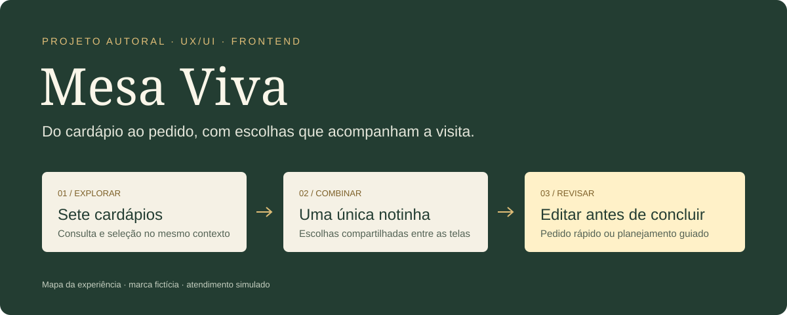

Cardápio no contexto
Um painel reúne consulta e seleção, com catálogo HTML como alternativa. A visita continua do ponto em que estava.
Portfólio / experiência para gastronomia
Mesa Viva é um estudo de interface e desenvolvimento para buffet e eventos. O desafio: permitir explorar sabores, combinar serviços e revisar um pedido sem perder as escolhas pelo caminho.
 Fotografia ilustrativa da demonstração
Fotografia ilustrativa da demonstraçãoSete cardápios, uma única notinha e dois caminhos para preparar o pedido. A mesma escolha acompanha o visitante entre a consulta dos serviços e a revisão.
Marca fictícia · atendimento simulado · nenhum pedido é enviado.
Decisões de experiência
Um painel reúne consulta e seleção, com catálogo HTML como alternativa. A visita continua do ponto em que estava.
Cardápios, resumo e revisão compartilham o pedido. No formulário, o resumo fica integrado à seção para liberar os controles.
Um caminho rápido e outro guiado, com detalhes opcionais e edição que pode ser salva ou cancelada.
Por dentro do projeto
Conteúdo, estado, validação e apresentação vivem em módulos separados. O rascunho é mantido na sessão da aba. Testes verificam regras e continuidade; a apresentação se adapta ao celular e ao desktop.
Ler o estudo no GitHub ↗